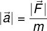
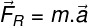
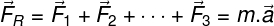
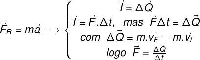

A Primeira Lei de Newton é chamada de Lei da Inércia. Seu enunciado original encontra-se traduzido abaixo:
“Todo corpo continua em seu estado de repouso ou de movimento uniforme em uma linha reta, a menos que seja forçado a mudar aquele estado por forças aplicadas sobre ele.”
Essa lei diz que, ao menos que haja alguma força resultante não nula sobre um corpo, esse deverá manter-se em repouso ou se mover ao longo de uma linha reta com velocidade constante.
A Lei de Inércia também explica o surgimento das forças inerciais, isto é, as forças que surgem quando os corpos estão sujeitos a alguma força capaz de produzir neles uma aceleração.
Por exemplo: ao pisar no acelerador do carro, um motorista pode sentir-se comprimido em seu banco, como se houvesse uma força puxando-o para trás. Na verdade, o que ele sente é a expressão de sua inércia, ou seja, a tendência que seu corpo tem de permanecer parado ou em velocidade constante.
Além disso, quanto maior for a massa de um corpo, maior será sua inércia. Assim, alterar o estado de movimento de um corpo de massa grande requer a aplicação de uma força maior. Corpos de massa pequena têm seu estado de movimento alterado facilmente com a aplicação de forças menos intensas.
Um corpo permanecerá em repouso ou em movimento retilíneo uniforme, a menos que uma força resultante seja aplicada sobre ele.
A Primeira Lei de Newton é pouco intuitiva: ao rolarmos uma bola no chão, ela para diante de nossos olhos. Jamais esperaríamos que ela rolasse eternamente. No caso descrito, porém, a bola está sujeita a uma força resultante que não é nula: há uma força de atrito entre a bola e a superfície do chão, desacelerando o objeto continuamente.
A Segunda Lei de Newton, também conhecida como Lei da Superposição de Forças ou como Princípio Fundamental da Dinâmica, traduzida de sua forma original, é apresentada abaixo:
“A mudança de movimento é proporcional à força motora imprimida e é produzida na direção de linha reta na qual aquela força é aplicada.”
Essa lei informa que o módulo da aceleração produzida sobre um corpo é diretamente proporcional ao módulo da força aplicada sobre ele e inversamente proporcional à sua massa. Essa lei é apresentada na equação abaixo:

|a| – módulo da aceleração (m/s²)
|F| - módulo da força (N ou kg.m/s²)
m – massa do corpo (kg)
As forças são grandezas vetoriais, portanto, são escritas com uma seta apontada sempre para direita acima de seu símbolo. Essa seta não indica o módulo ou a direção da grandeza vetorial, indica somente que elas são vetoriais. De acordo com a Segunda Lei de Newton, a força resultante aplicada sobre um corpo produz nele uma aceleração na mesma direção e sentido da força resultante:

FR – Força resultante (N ou kg.m/s²)
m – massa do corpo (kg)
a – aceleração (m/s²)
Além disso, o Princípio da Superposição pode ser calculado pela soma vetorial de todas as forças que atuam sobre o corpo:

A forma como Isaac Newton apresentou sua segunda lei foi um pouco diferente da forma atual. Newton enunciou essa lei em função de uma outra grandeza física: o impulso. De acordo com esse enunciado, a força resultante (FR) aplicada sobre um corpo durante um intervalo de tempo (Δt) produz uma mudança em sua quantidade de movimento (ΔQ), que é igual ao impulso (I) produzido sobre esse corpo. Assim, a força resultante (FR) pode ser escrita como a mudança na quantidade de movimento (ΔQ) durante um intervalo de tempo (Δt):

F – força aplicada sobre um corpo (N)
ΔQ – variação da quantidade de movimento (kg.m/s ou N.s)
Δt – intervalo de tempo (s)
m – massa do corpo (kg)
vF – velocidade final (m/s)
vi – velocidade final (m/s)
A Terceira Lei de Newton recebe o nome de Lei da Ação e Reação. Essa lei diz que todas as forças surgem aos pares: ao aplicarmos uma força sobre um corpo (ação), recebemos desse corpo a mesma força (reação), com mesmo módulo e na mesma direção, porém com sentido oposto. O enunciado original da Terceira Lei de Newton encontra-se traduzido abaixo:
“A toda ação há sempre uma reação oposta e de igual intensidade: as ações mútuas de dois corpos um sobre o outro são sempre iguais e dirigidas em sentidos opostos.”
Essa lei permite-nos entender que, para que surja uma força, é necessário que dois corpos interajam, produzindo forças de ação e reação. Além disso, é impossível que um par de ação e reação forme-se no mesmo corpo.
Outra informação contida no enunciado da Terceira Lei de Newton indica que os pares de ação e reação têm a mesma intensidade, mesma direção, porém sentidos opostos. Assim, se produzirmos uma força direcionada para baixo sobre um corpo, receberemos dele uma força de reação direcionada para cima. Por exemplo: se estivermos usando patins e empurrarmos um carrinho de supermercado lotado de compras, seremos empurrados para trás, em decorrência da fraca intensidade da força de atrito entre as rodas dos patins e o piso.